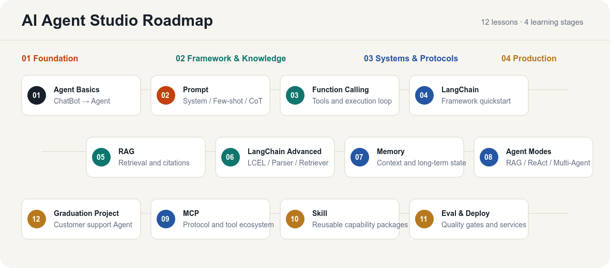
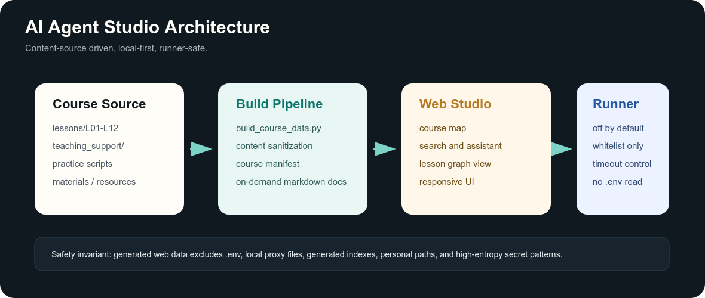

Learn
从讲义、总结和图谱建立概念骨架，避免只会照着 demo 跑。

AI Agent Studio
从系统学习到项目展示：12 章路径、交互式 Studio、面试题库和智能客服 Agent Showcase，帮助你构建可运行、可评测、可讲清楚的 Agent 工程能力。
从讲义、总结和图谱建立概念骨架，避免只会照着 demo 跑。
每章都有实战脚本和可复制命令，把知识落到能运行的代码。
挑战台和面试题库帮助你把工程判断讲清楚，最后沉淀成毕业项目。
AI Agent Studio
静态工作台可以直接托管在 GitHub Pages；如果需要运行课程脚本，再切回本地 server，并由白名单 runner 控制风险。

Curriculum
从基础认知到生产化部署，最后用智能客服 Agent 串起完整项目交付。
| 章节 | 主题 | 关键词 | 实战数 |
|---|---|---|---|
| L01 | L01 Agent 全景认知：从 ChatBot 到自主智能体 | Agent 基础 / ChatBot vs Agent / LLM 调用 | 4 |
| L02 | L02 Prompt Engineering 进阶：System Prompt 与 Agent 行为设计 | Prompt Engineering / System Prompt / Few-shot | 3 |
| L03 | L03 Function Calling 核心机制：给 Agent 装上手脚 | Function Calling / Tool Schema / 并发工具 | 3 |
| L04 | L04 LangChain 快速上手：Agent 开发的瑞士军刀 | LangChain / LangGraph / 自定义工具 | 6 |
| L05 | L05 RAG 检索增强生成：让 Agent 拥有专属知识库 | RAG / BM25 / 倒排索引 | 6 |
| L06 | L06 LangChain 深入：LCEL、Parser、Retriever 与 Callback | LCEL / Retriever / Output Parser | 8 |
| L07 | L07 记忆系统：让 Agent 越用越懂你 | Memory / 短期记忆 / 长期记忆 | 7 |
| L08 | L08 Agent 模式：从 RAG/ReAct 到多 Agent 协作 | Agent 模式 / Multi-Agent / ReAct | 5 |
| L09 | L09 MCP 协议与工具生态：标准化的 Agent 工具接入 | MCP / Tools / Resources | 7 |
| L10 | L10 Skill 相关：让 Agent 能力模块化复用 | Skill / DDICE / 授权边界 | 12 |
| L11 | L11 评测和部署：从 Demo 能跑到生产可用 | 评测 / 部署 / FastAPI | 10 |
| L12 | L12 毕业项目实战：智能客服 Agent | 毕业项目 / 智能客服 / LangGraph | 1 |

Capability Matrix
课程不是只讲概念，而是把模型控制、工具执行、知识检索、状态管理、协议接入、Skill 工程和评测部署都落到可运行代码。
Graduation Project
L12 把 LangGraph 状态机、RAG 知识库、多轮澄清、投诉工单、人工兜底、FastAPI 服务和评测脚本整合成一个可答辩项目。